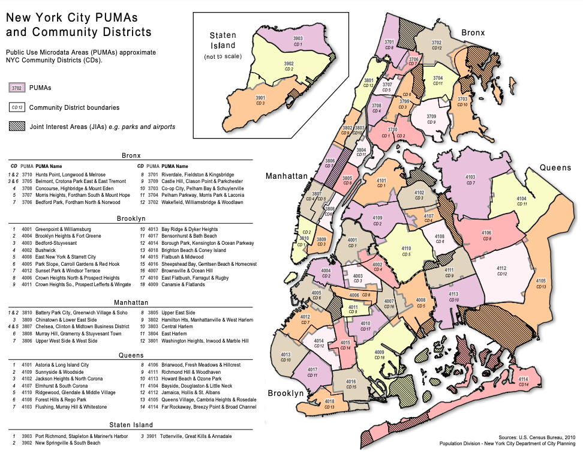
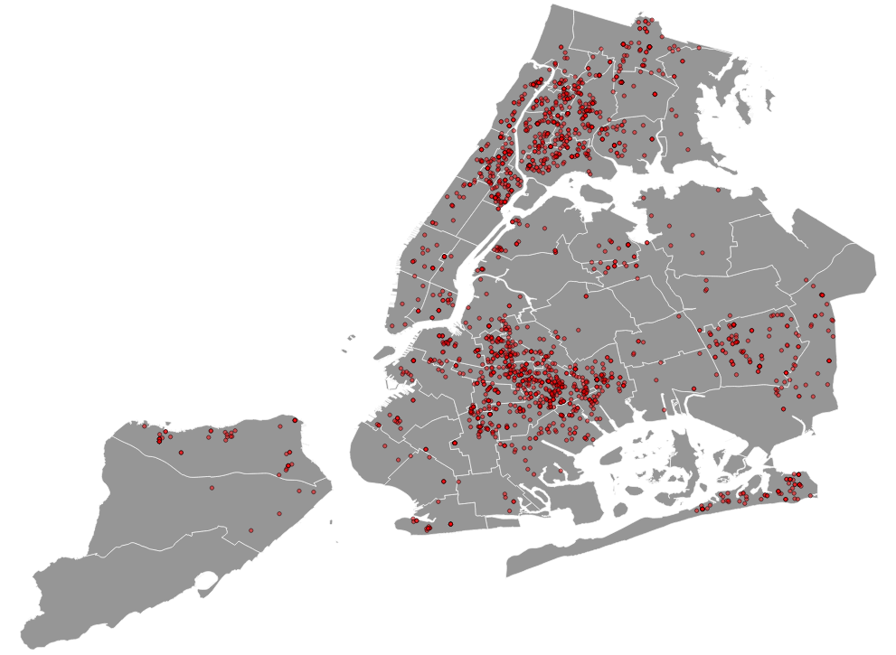

As seen in the chart below, there is clearly a huge difference in shootings incidents between the groups with the most shootings in a PUMA in the top 10% group being 144 and the most shootings in a PUMA in the lower 10% group being tied at 3.

If you are from the United States, the phrase “Gun-related violence” probably isn't new to you. It has become such a common thing to hear about happening here that it just doesn’t surprise you anymore. Gun control has been a heated debate in the United States for a number of years now, but not much has changed. Innocent people are being killed by the thousands every year because of these weapons of war that we have allowed almost anyone to own. Mass shootings have become a weekly thing and it doesn’t look like they are going to slow down anytime soon unless we find a way to make a change. New York is no stranger to gun-related violnce and saw in increase in 2020. Our question is what can we learn about from the location of these shootings? Is there any relationship between where the shootings are happening and the people that live in those areas?
To look into NYC shootings more closely, we used Public Use Microdata Areas (PUMA), to segment off the neighborhoods. The breakdown and names of each PUMA can be seen in the picture below.
Using data from New York City Open Data, we were able to find all of the gun-related incidents during 2020 in NYC and map them using their coordinates. Each unique incident is displayed as a red dot on the map. There were a total of 1942 unique incidents.
The next goal was to find out how many incidents were in each PUMA. To do this, we processed the data in QGIS, which enabled us to count all of the incidents in each PUMA. Once the points in each PUMA were counted, we transferred that new dataset over to ArcGIS to create the interactive map below.
To display the data in ArcGIS, we created a choropleth map that split the data into 10 quantile groups. By doing this, we can find which PUMAs are in the upper 10% of the gun-related incidents and which are in the lower 10%. In the upper 10%, the PUMAs are:
As seen in the chart below, there is clearly a huge difference in shootings incidents between the groups with the most shootings in a PUMA in the top 10% group being 144 and the most shootings in a PUMA in the lower 10% group being tied at 3.
From here, I used data provided by censusreporter.org. That being said, the data used to derive the displayed statistics has a margin of error of at least 10%.

Looking at the median age of the PUMAs, it is easier to see a correlation. Excluding the Borough Park, Kensington & Ocean Parkway PUMA, the Neighborhoods in the lower 10% have an average median age of 42.6 and the top 10% have an average median age of 33.6.

By looking at the race and ethnicity between the lower 10% and the upper 10% groups, we can see that the PUMAs in the lower 10% group are predominantly White and Asian neighborhoods, and the PUMAs in the upper 10% are predominately Black and Hispanic neighborhoods. Although this is the case, please do not take this for face value and think of the many systemic issues that may be causing this. I will elaborate more on this in my closing thoughts.


When looking at education level between the PUMAs, both groups had a decent high school or higher education rate, but the lower 10% group was consistently higher (average of 79% for the top 10% group and an average of 89% for the lower 10% group). When it comes to, bachelor's degree or higher education level, it isn't even close. The upper 10% group has an average of 19.1% and the lower 10% has an average of 51.7%.
In the chart below, we look into the financial situation of the PUMAs. Much like the results in the previous scatterplot. The median household income is much lower and the percent of those living under the poverty line is much higher in the upper 10% group compared to the lower 10% group. On average the median household income of those in the upper 10% group make $42,157.50 a year and 28.5% of people in the upper group are living under the poverty line. In the lower 10% group, the average household income is $92,628.50 and there is an average of 11.4% of people living below the poverty line.

Gun violence doesn't stop by addressing some of the relationships found in this study, but we hope that we can provide some insight and ideas to spark conversation between those reading. Starting with the youth, reinvest in the schools that are located in the PUMAs that are struggle with gun-related shootings to get the education between the two groups on a closer level. Kids deserve an equal opportunity to succeed and further their education beyond just high school. Providing more funding and scholarship opportunities can be crucial to kids in low-income areas. For those working in low-income areas, we need to see more opportunities and diversity in the type of jobs that available in these areas and provide wages that people can survive on. One of the most prominent relationships we can see is through the race and ethnicity of those that make up these neighborhoods, but as we said earlier, don't take this for face value and jump to conclusions about people. While White and Asian people make up most of the population in the lower 10% PUMAs and Black and Hispanic people make up most of the population in the upper 10% PUMAs, these relationships can be contributed to systemic issues that we need to fix all across the country. Black and Hispanic neighborhoods in New York have long suffered from issues such as redlining, over-policing, and gentrification.
Data sources
NYC Open Data:
https://data.cityofnewyork.us/Housing-Development/Public-Use-Microdata-Areas-PUMA-/cwiz-gctyCensus Reporter:
https://censusreporter.org/profiles/79500US3604007-nyc-brooklyn-community-district-16-brownsville-ocean-hill-puma-ny/